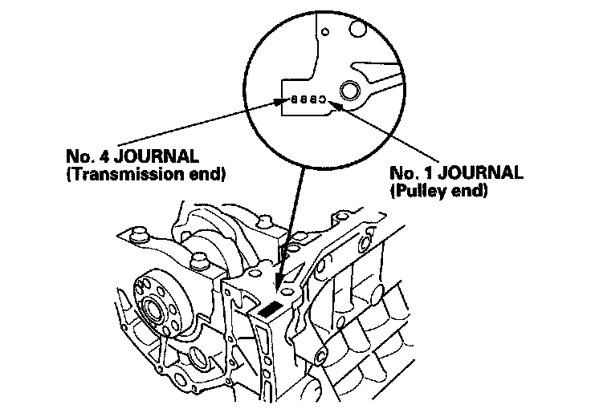

Tightening Torques
BlockWarpage of deck
Standard or New 0.07 mm (0.003 in.) max.
Bore diameter
Standard or New 90.000 - 90.015 mm (3.5433 - 3.5439 in.)
Crankshaft
Main journal diameter
Standard or New 71.976 - 72.000 mm (2.8337 - 2.8346 in.)
Rod journal diameter
Standard or New 56.976 - 57.000 mm (2.2431 - 2.2441 in.)
Rod/main journal taper
Standard or New 0.005 mm (0.0002 in.) max.
Service Limit 0.010 mm (0.0004 in.)
Rod/main journal out-of-round
Standard or New 0.005 mm (0.0002 in.) max.
Service Limit 0.010 mm (0.0004 in.)
End play
Standard or New 0.10 - 0.35 mm (0.004 - 0.014 in.)
Service Limit 0.45 mm (0.018 in.)
Runout
Standard or New 0.025 mm (0.0010 in.) max.
Service Limit 0.030 mm (0.0012 in.)
Crankshaft Bearing
Main bearing-to-journal oil clearance
Standard or New 0.019 - 0.045 mm (0.0007 - 0.0018 in.)
Service Limit 0.050 mm (0.0020 in.)
Rod bearing clearance
Standard or New 0.020 - 0.044 mm (0.0008 - 0.0017 in.)
Service Limit 0.050 mm (0.0020 in.)
Main Bearing Cap
Install the bearings (A) and bearing caps (B) with the arrow (C) facing the timing belt end of the engine.

Apply new engine oil to the bolt threads and flanges. Torque the bolts (B) to 20 N-m (2.0 kgf-m, 14 lbf-ft).

Tighten the bolt until the mark on the bolt head lines up with the mark on the connecting rod (turn the bolt 90°).
Crankshaft Bore Code Location



Connecting rod
Pin-to-rod clearance
Standard or New 0.005 - 0.014 mm (0.0002 - 0.0006 in.)
Service Limit 0.019 mm (0.0007 in.)
Small-end bore diameter
Standard or New 21.970 - 21.976 mm (0.8650 - 0.8652 in.)
Large-end bore diameter
Standard or New 60.0 mm (2.36 in.)
End play installed on crankshaft
Standard or New 0.15 - 0.35 mm (0.006 - 0.014 in.)
Service Limit 0.45 mm (0.018 in.)
Connecting Rod Bearing Cap
Tightening Torque 20 N-m (2.0 kgf-m, 14 lbf-ft) + 90°
Piston
Skirt O.D. at 16.0 mm (0.63 in.) from bottom of skirt
Standard or New 89.893 - 89.996 mm (3.5426 - 3.5431 in.)
Clearance in cylinder
Standard or New 0.004 - 0.032 mm (0.0001 - 0.0013 in.)
Service Limit 0.08 mm (0.003 in.)
Ring groove width
Top
Standard or New 1.240 - 1.255 mm (0.0488 - 0.0494 in.)
Service Limit 1.27 mm (0.050 in.)
Second
Standard or New 1.220 - 1.235 mm (0.0480 - 0.0486 in.)
Service Limit 1.25 mm (0.049 in.)
Oil
Standard or New 2.805 - 2.825 mm (0.1104 - 0.1112 in.)
Service Limit 2.85 mm (0.112 in.)
Piston ring
Ring-to-groove clearance
Top
Standard or New 0.055 - 0.085 mm (0.0022 - 0.0033 in.)
Service Limit 0.15 mm (0.006 in.)
Second
Standard or New 0.030 - 0.060 mm (0.0012 - 0.0024 in.)
Service Limit 0.13 mm (0.005 in.)
Ring end gap
Top
Standard or New 0.30 - 0.40 mm (0.012 - 0.016 in.)
Service Limit 0.60 mm (0.024 in.)
Second
Standard or New 0.40 - 0.55 mm (0.016 - 0.022 in.)
Service Limit 0.70 mm (0.028 in.)
Oil
Standard or New 0.20 - 0.70 mm (0.008 - 0.028 in.)
Service Limit 0.80 mm (0.031 in.)
Crankshaft Pulley
Torque the bolt to 65 N-m (6.5 kgf-m, 47 lbf-ft) with a torque wrench and heavy duty 19 mm socket (C).
Mark the bolt head (D) and crankshaft pulley (E) as shown, then tighten the bolt an additional 60° (The mark on the bolt head lines up with the mark on the crankshaft pulley).